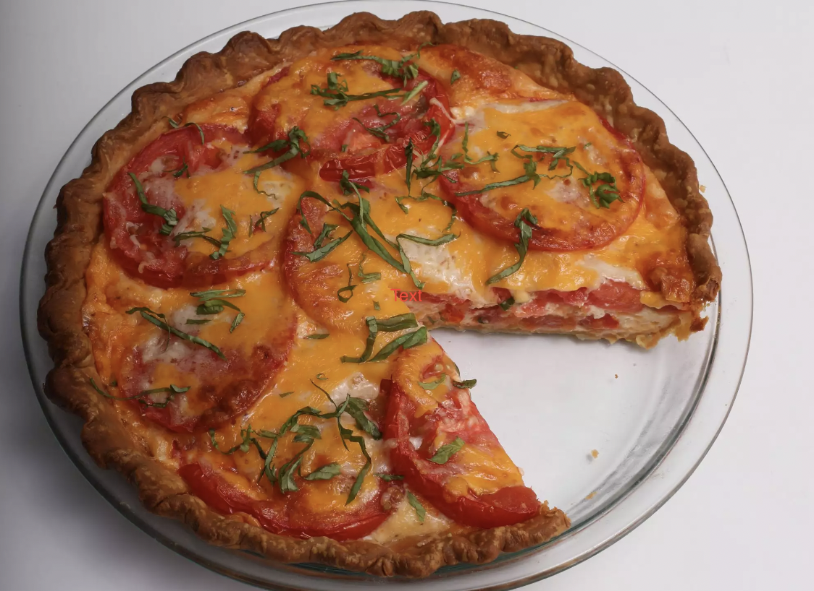

Southern Tomato Pie
Tomato slices are juicy and mix in well with the
creamy/cheesy "custard" in this Southern-inspired
tomato pie. The blind baking method helps keep the
crust nice and crunchy on the bottom.

A refreshing summer dinner dish
Ingredients
- ½ (14.1 ounce) package refrigerated pie crusts, at room temperature
- 3 medium tomatoes
- ½ cup mayonnaise
- 2 ounces cream cheese, softened
- 1 large egg, lightly beaten
Instructions
- Preheat oven to 400 degrees F (200 degrees C). Fit pie crust inside a 9-inch pie plate, pressing into the bottom and up the sides of the plate. Fold crust edges under; crimp as desired.
- Bake in the preheated oven for 10 minutes. Carefully remove parchment paper and pie weights. Continue baking until crust is light golden brown, 5 to 8 minutes more.
- Meanwhile, slice tomatoes crosswise into 1/4-inch thick slices; arrange tomato slices in a single layer on paper towels.
- Whisk together mayonnaise and cream cheese until combined and smooth.
- Spread half of the Cheddar mixture in the pie crust. Layer with 1/3 of the tomato slices in slightly overlapping circles.
And enjoy!!